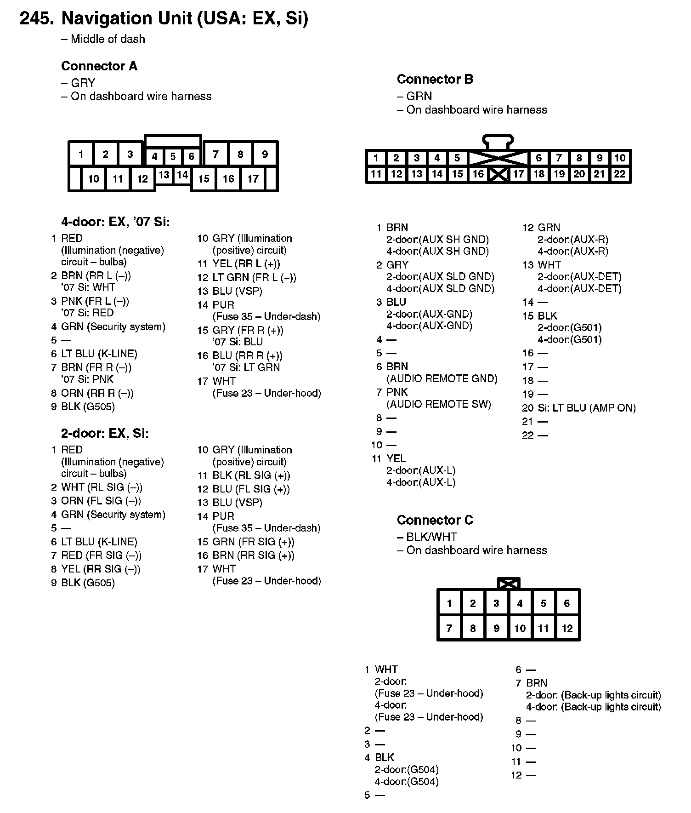
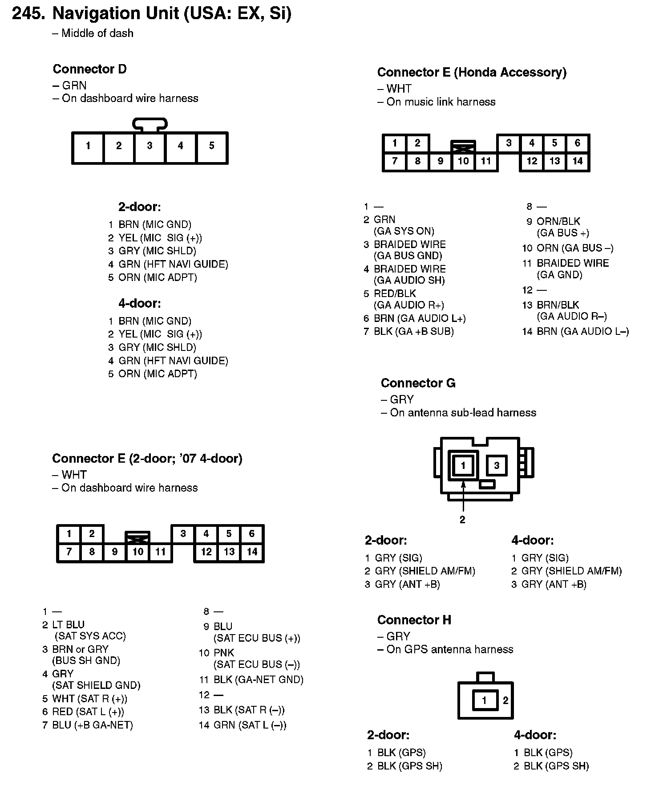
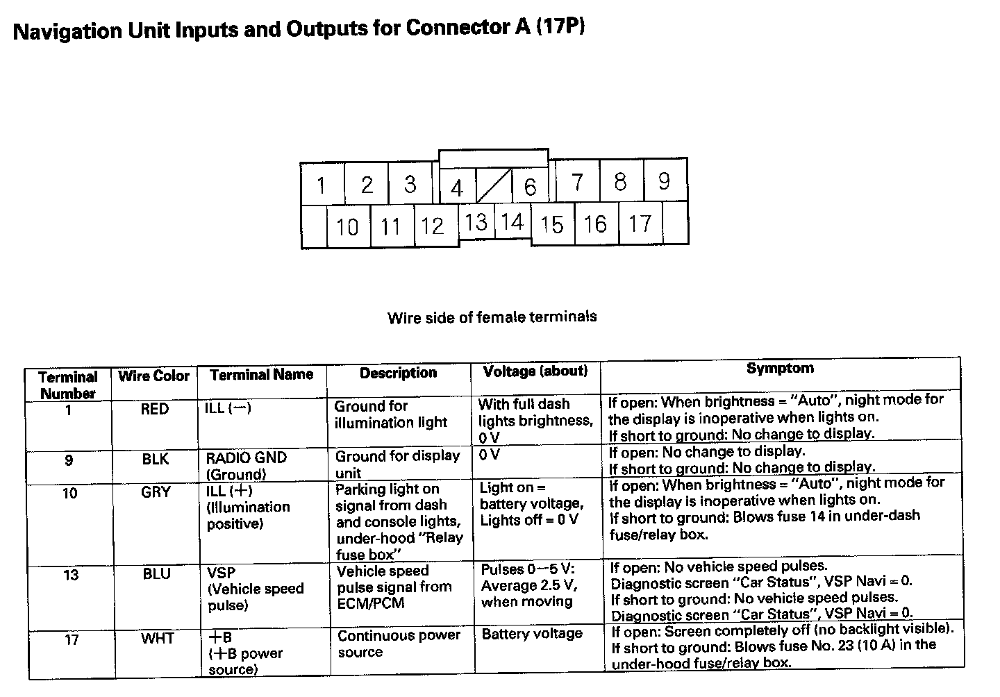
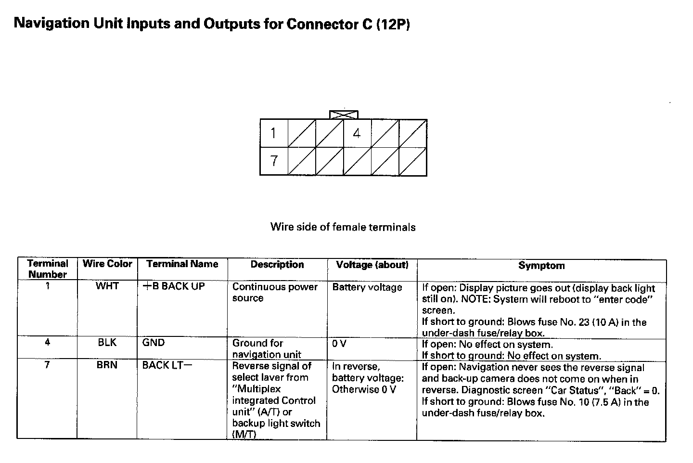
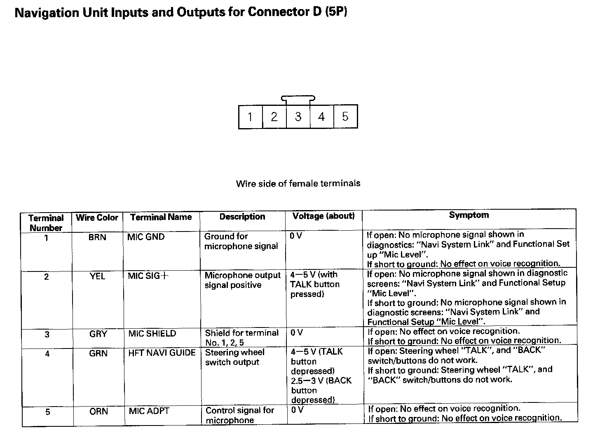
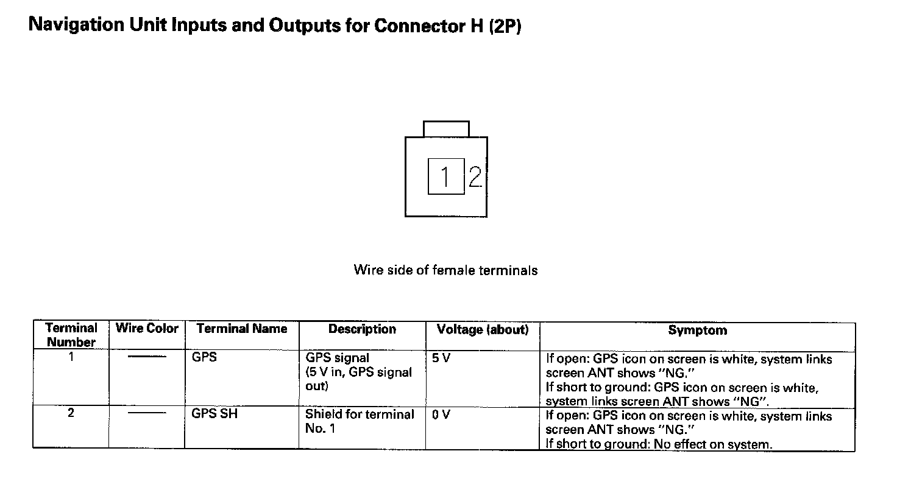

View 226-250: 245
245. Navigation Unit (USA: EX, Si):

245. Navigation Unit (USA: EX, Si):

Navigation Unit Inputs And Outputs For Connector A (17P):

Navigation Unit Inputs And Outputs For Connector C (12P):

Navigation Unit Inputs And Outputs For Connector C (12P):

Navigation Unit Inputs And Outputs For Connector H (2P):
